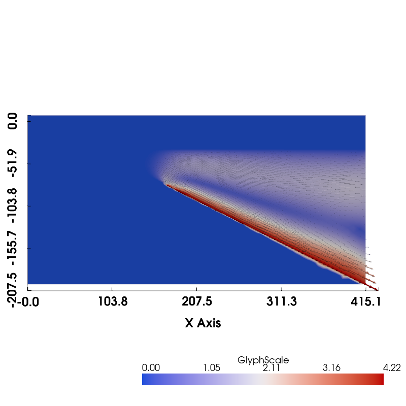
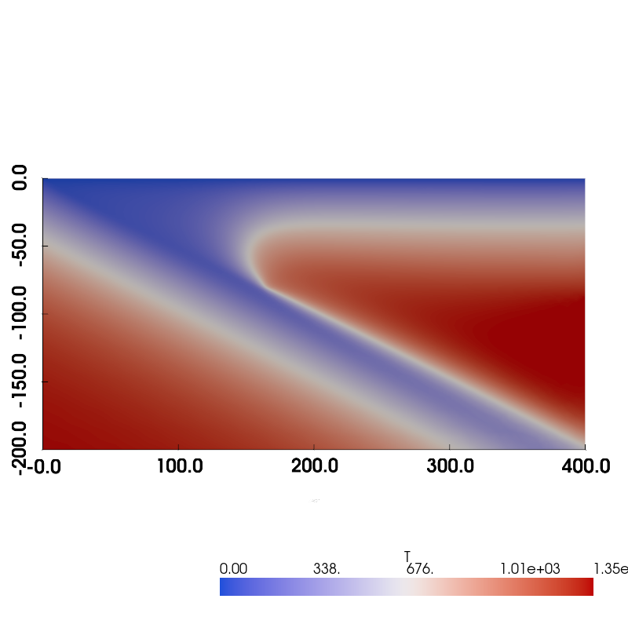
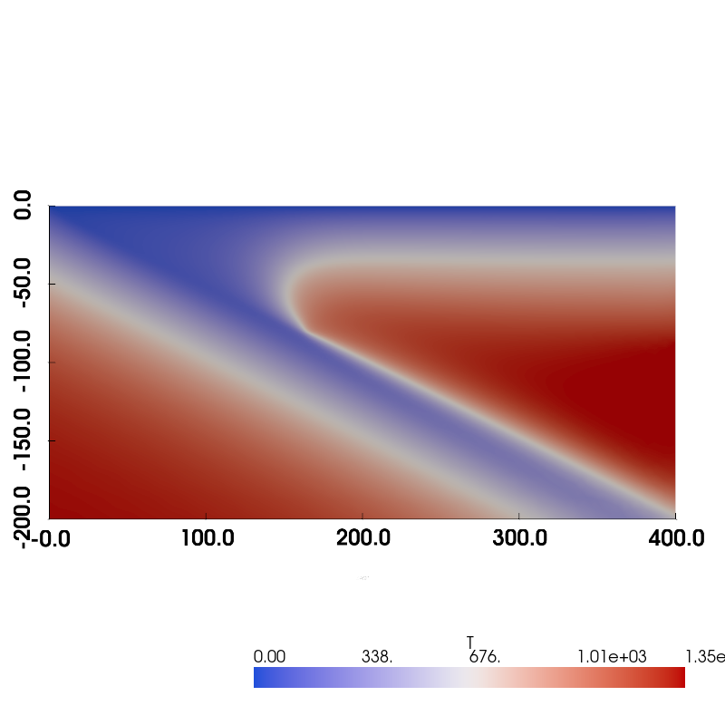
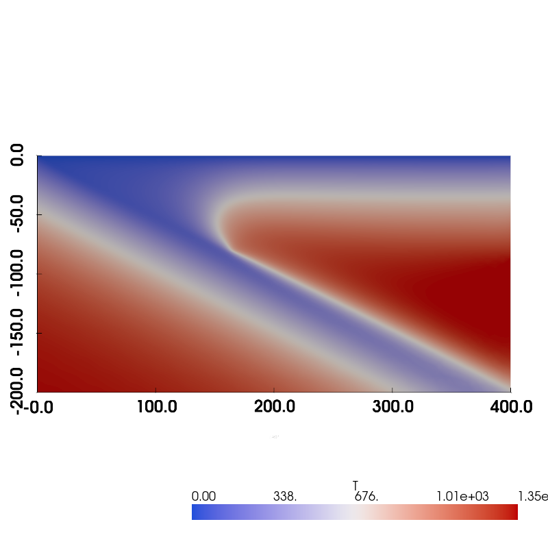
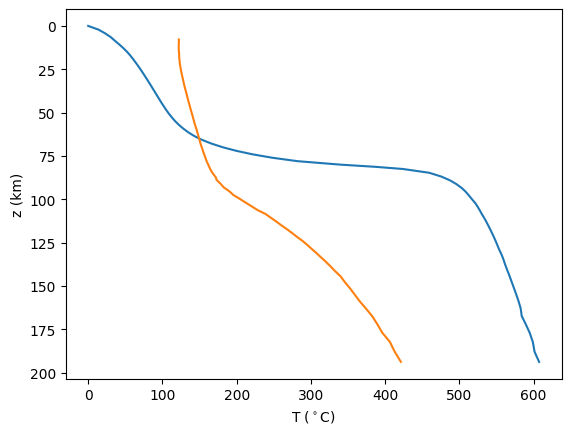
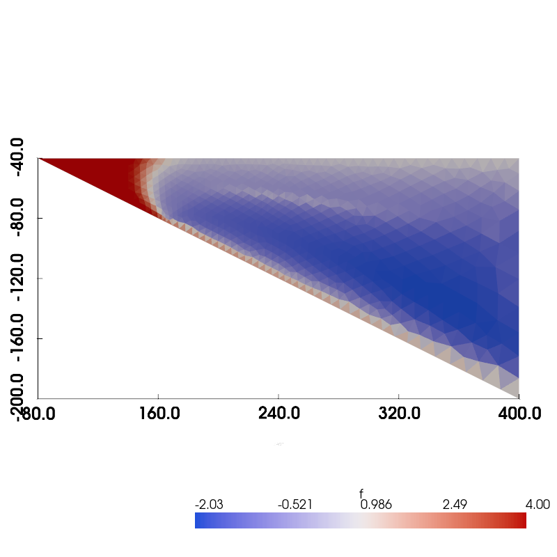
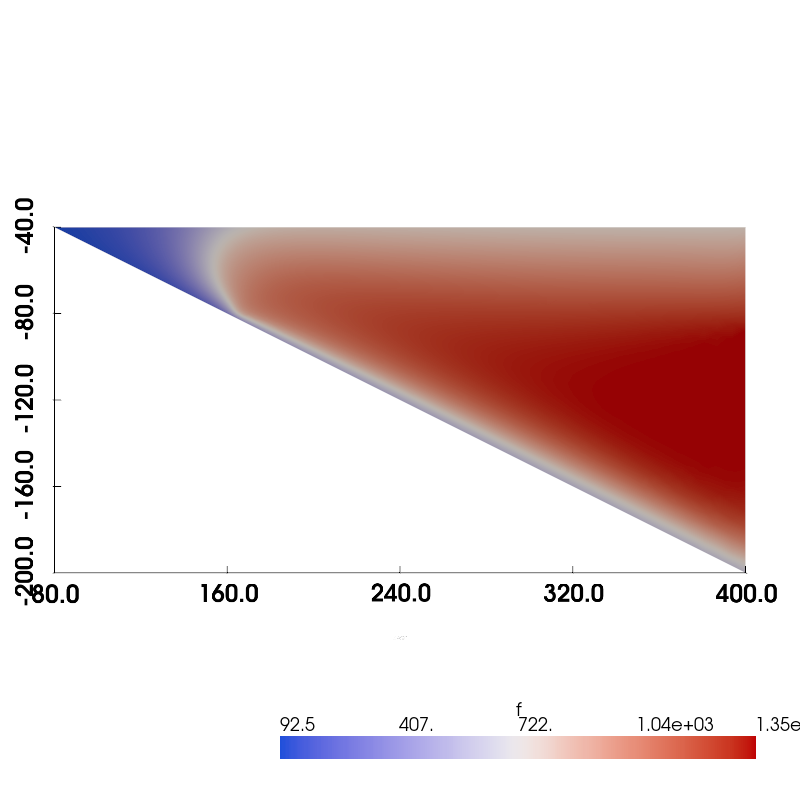
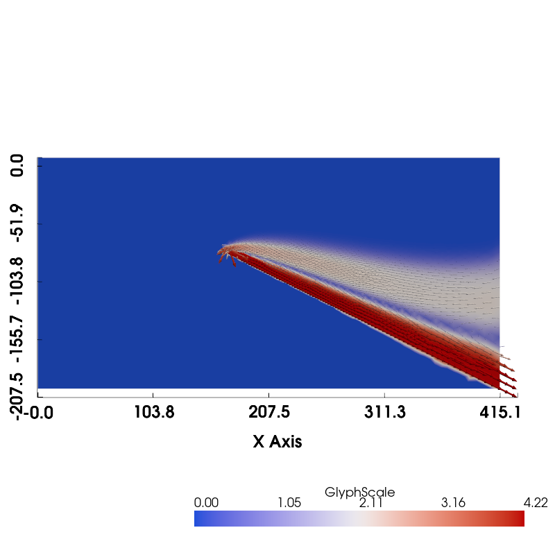
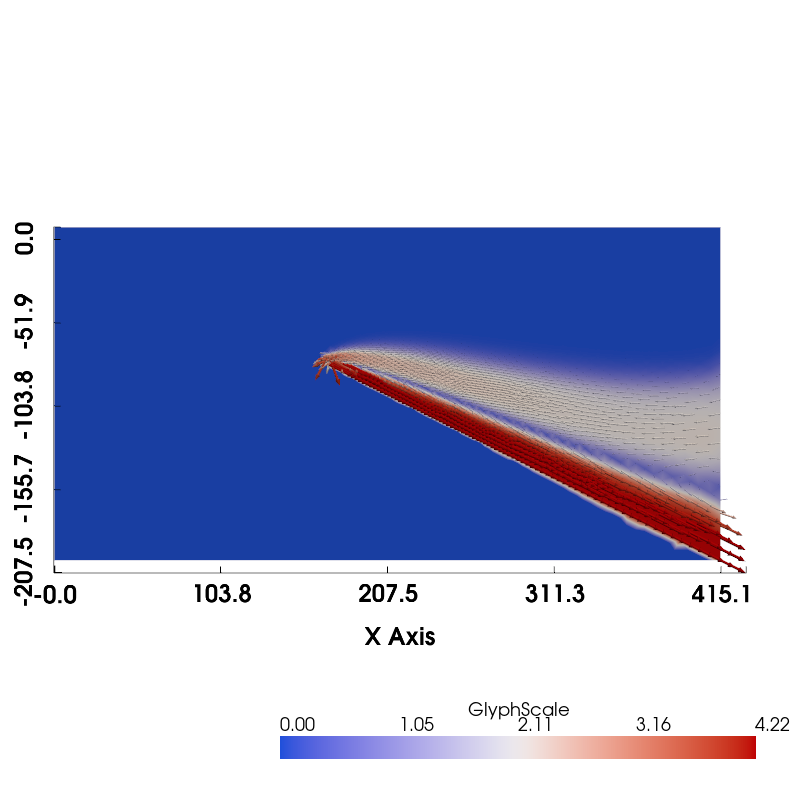

Subduction Zone Benchmark#
import sys, os
sys.path.append(os.path.join(os.path.pardir, 'python'))
params_filename = os.path.join(os.pardir, "data", "default_params.json")
import geometry as geo
from mpi4py import MPI
import dolfinx as df
import dolfinx.fem.petsc
import numpy as np
import scipy as sp
import ufl
import basix.ufl as bu
import matplotlib.pyplot as pl
import json
import pyvista as pv
import copy
pv.start_xvfb()
with open(params_filename, "r") as fp:
default_params = json.load(fp)
resscale = 5.0
coast_distance = 0
extra_width = 0
lc_depth = 40
uc_depth = 15
io_depth = 139
def create_benchmark_geometry(resscale, io_depth, extra_width,
coast_distance, lc_depth, uc_depth,
**kwargs):
"""
Arguments:
* resscale - resolution scale
* io_depth - prescribed input/output depth on wedge side
* extra_width - extra width at the base of the domain
* coast_distance - distance from trench to coast
* lc_depth - depth of lower crustal boundary
* uc_depth - depth of upper crustal boundary
Keyword Arguments:
distances:
* slab_diag1_depth - starting depth of slab diagnostic region
* slab_diag2_depth - end depth of slab diagnostic region
* partial_coupling_depth - partial coupling depth on slab
* full_coupling_depth - full coupling depth on slab
* slab_det_depth - detector depth on slab
resolutions factors (that get multiplied by the resscale to get the resolutions):
* io_depth_res_fact - input/output depth
* coast_res_fact - coastal point on top
* lc_slab_res_fact - lower crust slab intersection
* lc_side_res_fact - lower crust side intersection
* uc_slab_res_fact - upper crust slab intersection
* uc_side_res_fact - upper crust side intersection
* slab_diag1_res_fact - start of slab diagnostic region
* slab_diag2_res_fact - end of slab diagnostic region
* partial_coupling_depth_res_fact - partial coupling depth on slab
* full_coupling_depth_res_fact - full coupling depth on slab
* wedge_side_base_res_fact - base of the wedge side
* slab_side_base_res_fact - base of the slab side
surface ids:
* coast_sid - coastal slope
* top_sid - top of domain
* fault_sid - fault
* lc_side_sid - side of lower crust
* lc_base_sid - base of lower crust
* uc_side_sid - side of upper crust
* uc_base_sid - base of upper crust
* slab_sid - default slab surface id
* slab_diag_sid - diagnostic region of slab
* slab_side_sid - side of slab
* wedge_side_sid - side of wedge
* upper_wedge_side_sid - side of upper wedge
* slab_base_sid - base of slab
* wedge_base_sid - base of wedge
region ids:
* slab_rid - slab
* wedge_rid - wedge
* lc_rid - lower crust
* uc_rid - upper crust
* wedge_diag_rid - wedge diagnostic region
"""
# distances
#io_depth = kwargs.get('io_depth', default_params['io_depth'])
#extra_width = kwargs.get('extra_width', default_params['extra_width'])
#coast_distance = kwargs.get('coast_distance', default_params['coast_distance'])
#lc_depth = kwargs.get('lc_depth', default_params['lc_depth'])
#uc_depth = kwargs.get('uc_depth', default_params['uc_depth'])
slab_diag1_depth = kwargs.get('slab_diag1_depth', default_params['slab_diag1_depth'])
slab_diag2_depth = kwargs.get('slab_diag2_depth', default_params['slab_diag2_depth'])
partial_coupling_depth = kwargs.get('partial_coupling_depth', default_params['partial_coupling_depth'])
full_coupling_depth = kwargs.get('full_coupling_depth', default_params['full_coupling_depth'])
slab_det_depth = kwargs.get('slab_det_depth', default_params['slab_det_depth'])
# resolutions
io_depth_res = kwargs.get('io_depth_res_fact', default_params['io_depth_res_fact'])*resscale
coast_res = kwargs.get('coast_res_fact', default_params['coast_res_fact'])*resscale
lc_slab_res = kwargs.get('lc_slab_res_fact', default_params['lc_slab_res_fact'])*resscale
lc_side_res = kwargs.get('lc_side_res_fact', default_params['lc_side_res_fact'])*resscale
uc_slab_res = kwargs.get('uc_slab_res_fact', default_params['uc_slab_res_fact'])*resscale
uc_side_res = kwargs.get('uc_side_res_fact', default_params['uc_side_res_fact'])*resscale
slab_diag1_res = kwargs.get('slab_diag1_res_fact', default_params['slab_diag1_res_fact'])*resscale
slab_diag2_res = kwargs.get('slab_diag2_res_fact', default_params['slab_diag2_res_fact'])*resscale
partial_coupling_depth_res = kwargs.get('partial_coupling_depth_res_fact', default_params['partial_coupling_depth_res_fact'])*resscale
full_coupling_depth_res = kwargs.get('full_coupling_depth_res_fact', default_params['full_coupling_depth_res_fact'])*resscale
wedge_side_top_res = kwargs.get('wedge_side_top_res_fact', default_params['wedge_side_top_res_fact'])*resscale
wedge_side_base_res = kwargs.get('wedge_side_base_res_fact', default_params['wedge_side_base_res_fact'])*resscale
slab_side_base_res = kwargs.get('slab_side_base_res_fact', default_params['slab_side_base_res_fact'])*resscale
# surface ids
upper_wedge_side_sid = kwargs.get('upper_wedge_side_sid', default_params['upper_wedge_side_sid'])
coast_sid = kwargs.get('coast_sid', default_params['coast_sid'])
top_sid = kwargs.get('top_sid', default_params['top_sid'])
fault_sid = kwargs.get('fault_sid', default_params['fault_sid'])
lc_side_sid = kwargs.get('lc_side_sid', default_params['lc_side_sid'])
lc_base_sid = kwargs.get('lc_base_sid', default_params['lc_base_sid'])
uc_side_sid = kwargs.get('uc_side_sid', default_params['uc_side_sid'])
uc_base_sid = kwargs.get('uc_base_sid', default_params['uc_base_sid'])
slab_sid = kwargs.get('slab_sid', default_params['slab_sid'])
slab_diag_sid = kwargs.get('slab_diag_sid', default_params['slab_diag_sid'])
slab_side_sid = kwargs.get('slab_side_sid', default_params['slab_side_sid'])
wedge_side_sid = kwargs.get('wedge_side_sid', default_params['wedge_side_sid'])
slab_base_sid = kwargs.get('slab_base_sid', default_params['slab_base_sid'])
wedge_base_sid = kwargs.get('wedge_base_sid', default_params['wedge_base_sid'])
# region ids
slab_rid = kwargs.get('slab_rid', default_params['slab_rid'])
wedge_rid = kwargs.get('wedge_rid', default_params['wedge_rid'])
lc_rid = kwargs.get('lc_rid', default_params['lc_rid'])
uc_rid = kwargs.get('uc_rid', default_params['uc_rid'])
wedge_diag_rid = kwargs.get('wedge_diag_rid', default_params['wedge_diag_rid'])
# points in slab (just linear)
xs = [0.0, 140.0, 240.0, 400.0]
ys = [0.0, -70.0, -120.0, -200.0]
# slab resolutions
res = [1*resscale if y >= -slab_diag2_depth else 3*resscale for y in ys]
# set up the surface ids for the slab depending on depth
sids = []
for y in ys[1:]:
if y >= -lc_depth:
sid = fault_sid
elif y >= -slab_diag1_depth:
sid = slab_sid
elif y >= -slab_diag2_depth:
sid = slab_diag_sid
else:
sid = slab_sid
sids.append(sid)
# set up the slab spline
slab = geo.SlabSpline(xs, ys, res=res, sid=sids, name="Slab")
# adding the coupling depths may or may not be necessary
# depending on if they were included in the slab spline data already or not
# the slab class should ignore them if they aren't necessary
slab.addpoint(partial_coupling_depth, "Slab::PartialCouplingDepth",
res=partial_coupling_depth_res,
sid=slab_diag_sid)
slab.addpoint(full_coupling_depth, "Slab::FullCouplingDepth",
res=full_coupling_depth_res,
sid=slab_diag_sid)
# add the slab detector point
slab.addpoint(slab_det_depth, "Slab::DetectorPoint",
res=full_coupling_depth_res,
sid=slab_diag_sid)
geom = geo.SubductionGeometry(slab,
coast_distance=coast_distance,
extra_width=extra_width,
slab_side_sid=slab_side_sid,
wedge_side_sid=wedge_side_sid,
slab_base_sid=slab_base_sid,
wedge_base_sid=wedge_base_sid,
coast_sid=coast_sid,
top_sid=top_sid,
slab_rid=slab_rid,
wedge_rid=wedge_rid,
coast_res=coast_res,
slab_side_base_res=slab_side_base_res,
wedge_side_top_res=wedge_side_top_res,
wedge_side_base_res=wedge_side_base_res)
# add a lower crust
geom.addcrustlayer(lc_depth, "LowerCrust",
sid=lc_base_sid, rid=lc_rid,
slab_res=lc_slab_res,
side_res=lc_side_res,
slab_sid=fault_sid,
side_sid=lc_side_sid)
# add an upper crust
geom.addcrustlayer(uc_depth, "UpperCrust",
sid=uc_base_sid, rid=uc_rid,
slab_res=uc_slab_res,
side_res=uc_side_res,
slab_sid=fault_sid,
side_sid=uc_side_sid)
# add the pre-defined in-out point
geom.addwedgesidepoint(io_depth, "WedgeSide::InOut", line_name="UpperWedgeSide",
res=io_depth_res,
sid=upper_wedge_side_sid)
# add wedge dividers for the diagnostics
geom.addwedgedivider(slab_diag1_depth, "ColdCorner",
slab_res=slab_diag2_res,
top_res=slab_diag2_res,
rid=wedge_rid,
slab_sid=slab_sid)
# add wedge dividers for the diagnostics
geom.addwedgedivider(slab_diag2_depth, "WedgeFocused",
slab_res=slab_diag1_res,
top_res=slab_diag1_res,
rid=wedge_diag_rid,
slab_sid=slab_diag_sid)
return geom
geom = create_benchmark_geometry(resscale, io_depth, extra_width,
coast_distance, lc_depth, uc_depth)
mesh, cell_tags, facet_tags = geom.generatemesh()
tdim = mesh.topology.dim
fdim = tdim - 1
Info : Meshing 1D...
Info : [ 0%] Meshing curve 1 (Line)
Info : [ 10%] Meshing curve 2 (Line)
Info : [ 10%] Meshing curve 3 (Line)
Info : [ 10%] Meshing curve 4 (Line)
Info : [ 10%] Meshing curve 5 (Line)
Info : [ 10%] Meshing curve 6 (Line)
Info : [ 10%] Meshing curve 7 (Line)
Info : [ 10%] Meshing curve 8 (Line)
Info : [ 10%] Meshing curve 9 (Line)
Info : [ 10%] Meshing curve 10 (Line)
Info : [ 20%] Meshing curve 11 (Line)
Info : [ 20%] Meshing curve 12 (Line)
Info : [ 20%] Meshing curve 13 (Line)
Info : [ 20%] Meshing curve 14 (Line)
Info : [ 20%] Meshing curve 15 (Line)
Info : [ 20%] Meshing curve 16 (Line)
Info : [ 20%] Meshing curve 17 (Line)
Info : [ 20%] Meshing curve 18 (Line)
Info : [ 20%] Meshing curve 19 (Line)
Info : [ 30%] Meshing curve 20 (Line)
Info : [ 30%] Meshing curve 21 (Line)
Info : [ 30%] Meshing curve 22 (Line)
Info : [ 30%] Meshing curve 23 (Line)
Info : [ 30%] Meshing curve 24 (Line)
Info : [ 30%] Meshing curve 25 (Line)
Info : [ 30%] Meshing curve 27 (Line)
Info : [ 30%] Meshing curve 28 (Line)
Info : [ 30%] Meshing curve 29 (Line)
Info : [ 40%] Meshing curve 30 (Line)
Info : [ 40%] Meshing curve 31 (Line)
Info : [ 40%] Meshing curve 32 (Line)
Info : [ 40%] Meshing curve 33 (Line)
Info : [ 40%] Meshing curve 34 (Line)
Info : [ 40%] Meshing curve 35 (Line)
Info : [ 40%] Meshing curve 36 (Line)
Info : [ 40%] Meshing curve 37 (Line)
Info : [ 40%] Meshing curve 38 (Line)
Info : [ 50%] Meshing curve 39 (Line)
Info : [ 50%] Meshing curve 40 (Line)
Info : [ 50%] Meshing curve 41 (Line)
Info : [ 50%] Meshing curve 42 (Line)
Info : [ 50%] Meshing curve 43 (Line)
Info : [ 50%] Meshing curve 44 (Line)
Info : [ 50%] Meshing curve 45 (Line)
Info : [ 50%] Meshing curve 46 (Line)
Info : [ 50%] Meshing curve 47 (Line)
Info : [ 60%] Meshing curve 48 (Line)
Info : [ 60%] Meshing curve 49 (Line)
Info : [ 60%] Meshing curve 50 (Line)
Info : [ 60%] Meshing curve 51 (Line)
Info : [ 60%] Meshing curve 52 (Line)
Info : [ 60%] Meshing curve 54 (Line)
Info : [ 60%] Meshing curve 55 (Line)
Info : [ 60%] Meshing curve 56 (Line)
Info : [ 60%] Meshing curve 57 (Line)
Info : [ 70%] Meshing curve 58 (Line)
Info : [ 70%] Meshing curve 59 (Line)
Info : [ 70%] Meshing curve 60 (Line)
Info : [ 70%] Meshing curve 61 (Line)
Info : [ 70%] Meshing curve 62 (Line)
Info : [ 70%] Meshing curve 63 (Line)
Info : [ 70%] Meshing curve 64 (Line)
Info : [ 70%] Meshing curve 65 (Line)
Info : [ 70%] Meshing curve 66 (Line)
Info : [ 80%] Meshing curve 67 (Line)
Info : [ 80%] Meshing curve 68 (Line)
Info : [ 80%] Meshing curve 70 (Line)
Info : [ 80%] Meshing curve 71 (Line)
Info : [ 80%] Meshing curve 72 (Line)
Info : [ 80%] Meshing curve 73 (Line)
Info : [ 80%] Meshing curve 74 (Line)
Info : [ 80%] Meshing curve 75 (Line)
Info : [ 80%] Meshing curve 76 (Line)
Info : [ 90%] Meshing curve 77 (Line)
Info : [ 90%] Meshing curve 78 (Line)
Info : [ 90%] Meshing curve 79 (Line)
Info : [ 90%] Meshing curve 80 (Line)
Info : [ 90%] Meshing curve 81 (Line)
Info : [ 90%] Meshing curve 82 (Line)
Info : [ 90%] Meshing curve 83 (Line)
Info : [ 90%] Meshing curve 85 (Line)
Info : [ 90%] Meshing curve 86 (Line)
Info : [100%] Meshing curve 87 (Line)
Info : [100%] Meshing curve 88 (Line)
Info : [100%] Meshing curve 89 (Line)
Info : [100%] Meshing curve 90 (Line)
Info : [100%] Meshing curve 91 (Line)
Info : [100%] Meshing curve 92 (Line)
Info : [100%] Meshing curve 93 (Line)
Info : [100%] Meshing curve 95 (Line)
Info : [100%] Meshing curve 96 (Line)
Info : Done meshing 1D (Wall 0.0159036s, CPU 0.014907s)
Info : Meshing 2D...
Info : [ 0%] Meshing surface 1 (Plane, Frontal-Delaunay)
Info : [ 20%] Meshing surface 2 (Plane, Frontal-Delaunay)
Info : [ 40%] Meshing surface 3 (Plane, Frontal-Delaunay)
Info : [ 50%] Meshing surface 4 (Plane, Frontal-Delaunay)
Info : [ 70%] Meshing surface 5 (Plane, Frontal-Delaunay)
Info : [ 90%] Meshing surface 6 (Plane, Frontal-Delaunay)
Info : Done meshing 2D (Wall 0.0449033s, CPU 0.045941s)
Info : 1474 nodes 3239 elements
def create_submesh(mesh, cell_indices, cell_tags=None, facet_tags=None):
tdim = mesh.topology.dim
fdim = tdim-1
submesh, submesh_cell_map, submesh_vertex_map, submesh_geom_map = \
df.mesh.create_submesh(mesh, tdim, cell_indices)
submesh.topology.create_connectivity(fdim, tdim)
# if cell_tags are provided then map to the submesh
submesh_cell_tags = None
if cell_tags is not None:
submesh_cell_tags_indices = []
submesh_cell_tags_values = []
# loop over the submesh cells, checking if they're included in
# the parent cell_tags
for i,parentind in enumerate(submesh_cell_map):
parent_cell_tags_indices = np.argwhere(cell_tags.indices==parentind)
if parent_cell_tags_indices.shape[0]>0:
submesh_cell_tags_indices.append(i)
submesh_cell_tags_values.append(cell_tags.values[parent_cell_tags_indices[0][0]])
submesh_cell_tags_indices = np.asarray(submesh_cell_tags_indices)
submesh_cell_tagsvalues = np.asarray(submesh_cell_tags_values)
# create a new meshtags object
# indices should already be sorted by construction
submesh_cell_tags = df.mesh.meshtags(mesh, tdim,
submesh_cell_tags_indices,
submesh_cell_tags_values)
# if facet_tags are provided then map to the submesh
submesh_facet_tags = None
if facet_tags is not None:
# parent facet to vertices adjacency list
f2vs = mesh.topology.connectivity(fdim, 0)
# submesh facet to vertices adjaceny list
submesh.topology.create_connectivity(fdim, 0)
submesh_f2vs = submesh.topology.connectivity(fdim, 0)
# create a map from the parent vertices to the submesh facets
# (only for the facets that exist in the submesh)
submesh_parentvs2subf = dict()
for i in range(submesh_f2vs.num_nodes):
submesh_parentvs2subf[tuple(sorted([submesh_vertex_map[j] for j in submesh_f2vs.links(i)]))] = i
# loop over the facet_tags and map from the parent facet to the submesh facet
# via the vertices, copying over the facet_tag values
submesh_facet_tags_indices = []
submesh_facet_tags_values = []
for i,parentind in enumerate(facet_tags.indices):
subind = submesh_parentvs2subf.get(tuple(sorted(f2vs.links(parentind))), None)
if subind is not None:
submesh_facet_tags_indices.append(subind)
submesh_facet_tags_values.append(facet_tags.values[i])
submesh_facet_tags_indices = np.asarray(submesh_facet_tags_indices)
submesh_facet_tags_values = np.asarray(submesh_facet_tags_values)
perm = np.argsort(submesh_facet_tags_indices)
submesh_facet_tags = df.mesh.meshtags(mesh, fdim,
submesh_facet_tags_indices[perm],
submesh_facet_tags_values[perm])
return submesh, submesh_cell_tags, submesh_facet_tags, submesh_cell_map
wedge_rids = tuple(set([v['rid'] for k,v in geom.wedge_dividers.items()]+[geom.wedge_rid]))
slab_rids = tuple([geom.slab_rid])
wedge_submesh, wedge_cell_tags, wedge_facet_tags, wedge_cell_map = create_submesh(mesh, np.concatenate([cell_tags.find(rid) for rid in wedge_rids]), cell_tags, facet_tags)
slab_submesh, slab_cell_tags, slab_facet_tags, slab_cell_map = create_submesh(mesh, np.concatenate([cell_tags.find(rid) for rid in slab_rids]), cell_tags, facet_tags)
def plot_mesh(mesh, tags=None):
# Create VTK mesh
cells, types, x = df.plot.vtk_mesh(mesh)
grid = pv.UnstructuredGrid(cells, types, x)
tdim = mesh.topology.dim
fdim = tdim - 1
if tags is not None:
marker = np.zeros(mesh.topology.index_map(2).size_local)
if tags.dim == tdim:
for i, ind in enumerate(tags.indices):
marker[ind] = tags.values[i]
elif tags.dim == fdim:
mesh.topology.create_connectivity(fdim, tdim)
fcc = mesh.topology.connectivity(fdim, tdim)
for f,v in enumerate(tags.values):
for c in fcc.links(tags.indices[f]):
marker[c] = v
else:
raise Exception("Unknown tag dimension!")
grid.cell_data["Marker"] = marker
grid.set_active_scalars("Marker")
plotter = pv.Plotter(window_size=[800,800])
plotter.add_mesh(grid, show_edges=True, show_scalar_bar=False)
plotter.show_bounds()
plotter.view_xy()
plotter.show()
def plot_scalar(scalar, show_edges=False, log_scale=False):
# Create VTK mesh
if scalar.function_space.element.space_dimension==1:
cells, types, x = df.plot.vtk_mesh(scalar.function_space.mesh)
else:
cells, types, x = df.plot.vtk_mesh(scalar.function_space)
grid = pv.UnstructuredGrid(cells, types, x)
if scalar.function_space.element.space_dimension==1:
tdim = scalar.function_space.mesh.topology.dim
cell_imap = scalar.function_space.mesh.topology.index_map(tdim)
num_cells = cell_imap.size_local + cell_imap.num_ghosts
perm = [scalar.function_space.dofmap.cell_dofs(c)[0] for c in range(num_cells)]
grid.cell_data[scalar.name] = scalar.x.array.real[perm] if not log_scale else np.log10(scalar.x.array.real[perm])
else:
grid.point_data[scalar.name] = scalar.x.array.real if not log_scale else np.log10(scalar.x.array.real)
grid.set_active_scalars(scalar.name)
plotter = pv.Plotter(window_size=[800,800])
plotter.add_mesh(grid, show_edges=show_edges, show_scalar_bar=True, cmap='coolwarm')
plotter.show_bounds()
plotter.view_xy()
plotter.show()
def plot_vector(vector, show_edges=False, glyph_factor=4):
# Create VTK mesh
cells, types, x = df.plot.vtk_mesh(vector.function_space)
grid = pv.UnstructuredGrid(cells, types, x)
values = np.zeros((x.shape[0], 3))
values[:, :len(vector)] = vector.x.array.real.reshape((x.shape[0], len(vector)))
grid[vector.name] = values
geom = pv.Arrow()
glyphs = grid.glyph(orient=vector.name, factor=glyph_factor, geom=geom)
plotter = pv.Plotter(window_size=[800,800])
plotter.add_mesh(grid, show_edges=show_edges, show_scalar_bar=False, cmap='coolwarm')
plotter.add_mesh(glyphs, cmap='coolwarm', show_scalar_bar=True)
plotter.show_bounds()
plotter.view_xy()
plotter.show()
# velocity and pressure elements
p_p = 1
p_T = 2
v_e = bu.element("Lagrange", mesh.basix_cell(), p_p+1, shape=(mesh.geometry.dim,), dtype=df.default_real_type)
p_e = bu.element("Lagrange", mesh.basix_cell(), p_p, dtype=df.default_real_type)
vp_e = bu.mixed_element([v_e, p_e])
def create_vp_functions(mesh):
V_vp = df.fem.functionspace(mesh, vp_e)
V_v, _ = V_vp.sub(0).collapse()
# V_v0, _ = V_v.sub(0).collapse()
# V_v1, _ = V_v.sub(1).collapse()
# V_p, _ = V_vp.sub(1).collapse()
vp_i = df.fem.Function(V_vp)
(v_i, p_i) = vp_i.split()
vp_a = ufl.TrialFunction(V_vp)
vp_t = ufl.TestFunction(V_vp)
return V_vp, V_v, vp_i, v_i, p_i, vp_t, vp_a
V_vp, V_v, vp_i, v_i, p_i, _, _ = create_vp_functions(mesh)
Vslab_vp, Vslab_v, vps_i, vs_i, ps_i, vps_t, vps_a = create_vp_functions(slab_submesh)
Vwedge_vp, Vwedge_v, vpw_i, vw_i, pw_i, vpw_t, vpw_a = create_vp_functions(wedge_submesh)
# temperature
T_e = bu.element("Lagrange", mesh.basix_cell(), p_T, dtype=df.default_real_type)
V_T = df.fem.functionspace(mesh, T_e)
Vslab_T = df.fem.functionspace(slab_submesh, T_e)
Vwedge_T = df.fem.functionspace(wedge_submesh, T_e)
T_i = df.fem.Function(V_T)
T_i.name = "T"
T_a = ufl.TrialFunction(V_T)
T_t = ufl.TestFunction(V_T)
# mostly dimensional (mostly reference) values
k0 = 3.1 # reference thermal conductivity (W/m/K)
rho0 = 3300.0 # reference density (kg/m^3)
cp0 = 1250.0 # reference heat capacity (J/kg/K)
h0 = 1000.0 # reference length scale (m)
T0 = 1.0 # reference temperature (deg C or K)
eta0 = 1.0e21 # reference viscosity (Pa s)
etamax = 1.0e25 # maximum viscosity (Pa s)
R = 8.3145 # gas constant (J/mol/K)
nsigma = 3.5 # stress viscosity power law exponent (non-dim)
Aeta = 28968.6 # pre-exponential viscosity constant (Pa s^(1/n))
E = 540.0e3 # viscosity activation energy
# non-dim parameters
Ts = 0.0 # surface temperature (non-dim, also deg C)
Tm = 1350.0 # mantle temperature (non-dim, also deg C)
kc = 0.8064516 # crustal thermal conductivity (non-dim)
km = 1.0 # mantle thermal conductivity (non-dim)
H1 = 0.419354 # upper crustal volumetric heat production (non-dim)
H2 = 0.087097 # lower crustal volumetric heat production (non-dim)
Myr_to_s = lambda a: a*1.e6*365.25*24*60*60
# case specific
AMyr = 100.0 # age of subducting slab (Myr)
qs = 20.96774 # surface heat flux (non-dim)
Vs = 4.2166 # slab speed
nondim_to_K = lambda T: T0*T + 273.15
# derived parameters
A = Myr_to_s(100.0) # age of subducting slab (s)
kappa0 = k0/rho0/cp0 # reference thermal diffusivity (m^2/s)
v0 = kappa0/h0 # reference velocity (m/s)
e0 = v0/h0 # reference strain rate (/s)
zd = 2*np.sqrt(kappa0*A)/h0 # incoming slab scale depth (non-dim)
TsK = nondim_to_K(Ts) # dimensionalized surface temperature (K)
# from geometry
deltaztrench = -geom.slab_spline.findpoint('Slab::Trench').y
deltaxcoast = geom.coast_distance
deltazuc = -geom.crustal_lines[-1][0].y.min()
deltazc = -geom.crustal_lines[0][0].y.min()
e0, Aeta, 1/Aeta, E, v0/h0, A
(7.515151515151515e-13,
28968.6,
3.452013559509262e-05,
540000.0,
7.515151515151515e-13,
3155760000000000.0)
def T_trench(x):
"""
Return temperature at the trench
"""
deltazsurface = np.minimum(np.maximum(deltaztrench*(1.0 - x[0,:]/max(deltaxcoast, np.finfo(float).eps)), 0.0), deltaztrench)
return Ts + (Tm-Ts)*sp.special.erf(-(x[1,:]+deltazsurface)/zd)
def T_backarc_c(x):
"""
Return continental backarc temperature
"""
T = np.empty(x.shape[1])
deltazsurface = np.minimum(np.maximum(deltaztrench*(1.0 - x[0,:]/max(deltaxcoast, np.finfo(float).eps)), 0.0), deltaztrench)
for i in range(x.shape[1]):
if -(x[1,i]+deltazsurface[i]) < deltazuc:
deltaz = -(x[1,i]+deltazsurface[i])
T[i] = Ts - H1*(deltaz**2)/(2*kc) + (qs/kc)*deltaz
elif -(x[1,i]+deltazsurface[i]) < deltazc:
deltaz1 = deltazuc #- deltazsurface[i]
T1 = Ts - H1*(deltaz1**2)/(2*kc) + (qs/kc)*deltaz1
q1 = - H1*deltaz1 + qs
deltaz = -(x[1,i] + deltazsurface[i] + deltazuc)
T[i] = T1 - H2*(deltaz**2)/(2*kc) + (q1/kc)*deltaz
else:
deltaz1 = deltazuc # - deltazsurface[i]
T1 = Ts - H1*(deltaz1**2)/(2*kc) + (qs/kc)*deltaz1
q1 = - H1*deltaz1 + qs
deltaz2 = deltazc - deltazuc #- deltazsurface[i]
T2 = T1 - H2*(deltaz2**2)/(2*kc) + (q1/kc)*deltaz2
q2 = - H2*deltaz2 + q1
deltaz = -(x[1,i] + deltazsurface[i] + deltazc)
T[i] = min(Tm, T2 + (q2/km)*deltaz)
return T
def vw_slabtop(x):
"""
Return the wedge velocity on the slab surface
"""
pcd = -geom.slab_spline.findpoint("Slab::PartialCouplingDepth").y
fcd = -geom.slab_spline.findpoint("Slab::FullCouplingDepth").y
dcd = fcd-pcd
v = np.empty((mesh.geometry.dim, x.shape[1]))
for i in range(x.shape[1]):
v[:,i] = min(max(-(x[1,i]+pcd)/dcd, 0.0), 1.0)*Vs*geom.slab_spline.unittangentx(x[0,i])
return v
def vs_slabtop(x):
"""
Return the slab velocity on the slab surface
"""
v = np.empty((mesh.geometry.dim, x.shape[1]))
for i in range(x.shape[1]):
v[:,i] = Vs*geom.slab_spline.unittangentx(x[0,i])
return v
wedgetop_dofs_Vwedge_v = df.fem.locate_dofs_topological((Vwedge_vp.sub(0), Vwedge_v), fdim,
np.concatenate([wedge_facet_tags.find(sid) for sid in set([line.pid for line in geom.crustal_lines[0]])]))
slab_dofs_Vslab_v = df.fem.locate_dofs_topological((Vslab_vp.sub(0), Vslab_v), fdim,
np.concatenate([slab_facet_tags.find(sid) for sid in set(geom.slab_spline.pids)]))
slab_dofs_Vwedge_v = df.fem.locate_dofs_topological((Vwedge_vp.sub(0), Vwedge_v), fdim,
np.concatenate([wedge_facet_tags.find(sid) for sid in set(geom.slab_spline.pids)]))
top_dofs_V_T = df.fem.locate_dofs_topological(V_T, fdim,
np.concatenate([facet_tags.find(geom.coast_sid), facet_tags.find(geom.top_sid)]))
slabside_dofs_V_T = df.fem.locate_dofs_topological(V_T, fdim,
np.concatenate([facet_tags.find(sid) for sid in set([line.pid for line in geom.slab_side_lines])]))
wedgeside_dofs_V_T = df.fem.locate_dofs_topological(V_T, fdim,
np.concatenate([facet_tags.find(sid) for sid in set([line.pid for line in geom.wedge_side_lines[1:]])]))
zero_c = df.fem.Constant(mesh, df.default_scalar_type(0.0))
zero_w_c = df.fem.Constant(wedge_submesh, df.default_scalar_type(0.0))
zero_s_c = df.fem.Constant(slab_submesh, df.default_scalar_type(0.0))
zero_vw_f = df.fem.Function(Vwedge_v)
zero_vw_f.x.array[:] = 0.0
bcs_T = []
bcs_T.append(df.fem.dirichletbc(zero_c, top_dofs_V_T, V_T))
T_trench_f = df.fem.Function(V_T)
T_trench_f.interpolate(T_trench)
bcs_T.append(df.fem.dirichletbc(T_trench_f, slabside_dofs_V_T))
T_backarc_c_f = df.fem.Function(V_T)
T_backarc_c_f.interpolate(T_backarc_c)
bcs_T.append(df.fem.dirichletbc(T_backarc_c_f, wedgeside_dofs_V_T))
bcs_vpw = []
bcs_vpw.append(df.fem.dirichletbc(zero_vw_f, wedgetop_dofs_Vwedge_v, Vwedge_vp.sub(0)))
vw_slabtop_f = df.fem.Function(Vwedge_v)
vw_slabtop_f.interpolate(vw_slabtop)
bcs_vpw.append(df.fem.dirichletbc(vw_slabtop_f, slab_dofs_Vwedge_v, Vwedge_vp.sub(0)))
bcs_vps = []
vs_slabtop_f = df.fem.Function(Vslab_v)
vs_slabtop_f.interpolate(vs_slabtop)
bcs_vps.append(df.fem.dirichletbc(vs_slabtop_f, slab_dofs_Vslab_v, Vslab_vp.sub(0)))
def stokes_forms(vp_t, vp_a, mesh, eta=1):
(v_t, p_t) = ufl.split(vp_t)
(v_a, p_a) = ufl.split(vp_a)
Ks = ufl.inner(ufl.sym(ufl.grad(v_t)), 2*eta*ufl.sym(ufl.grad(v_a)))*ufl.dx
Gs = -ufl.div(v_t)*p_a*ufl.dx
Ds = -p_t*ufl.div(v_a)*ufl.dx
Ss = Ks + Gs + Ds
zero_c = df.fem.Constant(mesh, df.default_scalar_type(0.0))
fs = zero_c*(sum(v_t) + p_t)*ufl.dx
return Ss, fs
Ssw, fsw = stokes_forms(vpw_t, vpw_a, wedge_submesh)
problem_vpw = df.fem.petsc.LinearProblem(Ssw, fsw, bcs=bcs_vpw, u=vpw_i,
petsc_options={"ksp_type": "preonly", "pc_type": "lu", "pc_factor_mat_solver_type" : "mumps"})
vpw_i = problem_vpw.solve()
Sss, fss = stokes_forms(vps_t, vps_a, slab_submesh)
problem_vps = df.fem.petsc.LinearProblem(Sss, fss, bcs=bcs_vps, u=vps_i,
petsc_options={"ksp_type": "preonly", "pc_type": "lu", "pc_factor_mat_solver_type" : "mumps"})
vps_i = problem_vps.solve()
dx = ufl.Measure("dx", domain=mesh, subdomain_data=cell_tags)
dS = ufl.Measure("dS", domain=mesh, subdomain_data=facet_tags)
crust_rids = tuple(set([v['rid'] for k,v in geom.crustal_layers.items()]))
lc_rids = tuple([geom.crustal_layers['LowerCrust']['rid']])
uc_rids = tuple([geom.crustal_layers['UpperCrust']['rid']])
cell_imap = mesh.topology.index_map(tdim)
num_cells = cell_imap.size_local + cell_imap.num_ghosts
slab_reverse_cell_map = np.full(num_cells, -1, dtype=np.int32)
slab_reverse_cell_map[slab_cell_map] = np.arange(len(slab_cell_map))
interp_vs_i = df.fem.Function(V_v)
interp_vs_i.name = "vs"
interp_vs_i.x.array[:] = 0.0
interp_vs_i.interpolate(vps_i.sub(0).collapse(), cells=slab_cell_map, cell_map=slab_reverse_cell_map)
wedge_reverse_cell_map = np.full(num_cells, -1, dtype=np.int32)
wedge_reverse_cell_map[wedge_cell_map] = np.arange(len(wedge_cell_map))
interp_vw_i = df.fem.Function(V_v)
interp_vw_i.name = "vw"
interp_vw_i.x.array[:] = 0.0
interp_vw_i.interpolate(vpw_i.sub(0).collapse(), cells=wedge_cell_map, cell_map=wedge_reverse_cell_map)
STs = (T_t*ufl.inner(interp_vs_i, ufl.grad(T_a)) + ufl.inner(ufl.grad(T_a), km*ufl.grad(T_t)))*dx(slab_rids)
STw = (T_t*ufl.inner(interp_vw_i, ufl.grad(T_a)) + ufl.inner(ufl.grad(T_a), km*ufl.grad(T_t)))*dx(wedge_rids)
STc = ufl.inner(ufl.grad(T_a), kc*ufl.grad(T_t))*dx(crust_rids)
ST = STs + STw + STc
fT = T_t*H1*dx(uc_rids) + T_t*H2*dx(lc_rids)
problem_T = df.fem.petsc.LinearProblem(ST, fT, bcs=bcs_T, u=T_i,
petsc_options={"ksp_type": "preonly", "pc_type": "lu", "pc_factor_mat_solver_type" : "mumps"})
T_i = problem_T.solve()
plot_vector(interp_vw_i)
plot_vector(interp_vs_i)
plot_scalar(T_i)

 


def get_first_cells(x):
tree = df.geometry.bb_tree(mesh, mesh.geometry.dim)
xl = x
if len(x.shape)==1: xl = [x]
first_cells = []
for x0 in xl:
cell_candidates = df.geometry.compute_collisions_points(tree, x0)
cell = df.geometry.compute_colliding_cells(mesh, cell_candidates, x0).array
assert len(cell) > 0
first_cells.append(cell[0])
return first_cells
xpt = np.asarray(geom.slab_spline.intersecty(-100.0)+[0.0])
Tpt = T_i.eval(xpt, get_first_cells(xpt)[0])[0]
print("T_(200,-100) = {:.2f} deg C".format(Tpt,))
one_c = df.fem.Constant(mesh, df.default_scalar_type(1.0))
slab_diag_sids = tuple([geom.wedge_dividers['WedgeFocused']['slab_sid']])
Tslab = df.fem.assemble_scalar(df.fem.form(T_i*dS(slab_diag_sids)))\
/df.fem.assemble_scalar(df.fem.form(one_c*dS(slab_diag_sids)))
print("T_slab = {:.2f} deg C".format(Tslab,))
wedge_diag_rids = tuple([geom.wedge_dividers['WedgeFocused']['rid']])
wedge_diag_area = df.fem.assemble_scalar(df.fem.form(one_c*dx(wedge_diag_rids)))
Twedge = df.fem.assemble_scalar(df.fem.form(T_i*dx(wedge_diag_rids)))\
/wedge_diag_area
print("T_wedge = {:.2f} deg C".format(Twedge,))
vrmswedge = np.sqrt(df.fem.assemble_scalar(df.fem.form(ufl.inner(interp_vw_i, interp_vw_i)*dx(wedge_diag_rids)))\
/wedge_diag_area)*kappa0/h0*60*60*24*365.25*1.e3
print("V_rms,w = {:.2f} mm/yr".format(vrmswedge,))
T_(200,-100) = 517.17 deg C
T_slab = 451.94 deg C
T_wedge = 927.02 deg C
V_rms,w = 34.64 mm/yr
slabpoints = np.array([[curve.points[0].x, curve.points[0].y, 0.0] for curve in geom.slab_spline.interpcurves])
slabmoho = copy.deepcopy(geom.slab_spline)
slabmoho.translatenormalandcrop(-7.0)
slabmohopoints = np.array([[curve.points[0].x, curve.points[0].y, 0.0] for curve in slabmoho.interpcurves])
fig = pl.figure()
ax = fig.gca()
ax.plot(T_i.eval(slabpoints, get_first_cells(slabpoints))[:,0], -slabpoints[:,1], label='slab surface')
ax.plot(T_i.eval(slabmohopoints, get_first_cells(slabmohopoints))[:,0], -slabmohopoints[:,1], label='slab moho')
ax.set_xlabel('T ($^\circ$C)')
ax.set_ylabel('z (km)')
ax.invert_yaxis()
fig.show()

# x_w = ufl.SpatialCoordinate(wedge_submesh)
# interp_Tw_i = df.fem.Function(Vwedge_T) # T on wedge functionspace
# interp_Tw_i.interpolate(T_i, cell_map=wedge_cell_map)
# wedge_Tdim = nondim_to_K(interp_Tw_i) - 0.3*x_w[1] # dimensional temperature in Kelvin with an adiabat added
# eta0_w_c = df.fem.Constant(wedge_submesh, df.default_scalar_type(eta0))
# # invAeta_w_c = df.fem.Constant(wedge_submesh, df.default_scalar_type(1./Aeta))
# E_w_c = df.fem.Constant(wedge_submesh, df.default_scalar_type(E))
# # e0_w_c = df.fem.Constant(wedge_submesh, df.default_scalar_type(e0))
# invetamax_w_c = df.fem.Constant(wedge_submesh, df.default_scalar_type(eta0/etamax))
# invetafact_w_c = df.fem.Constant(wedge_submesh, df.default_scalar_type(eta0*(e0**neII)/Aeta))
# # wedge viscosity:
edot_w = ufl.sym(ufl.grad(vw_i))
eII_w = ufl.sqrt(0.5*ufl.inner(edot_w, edot_w))
# # inverse dimensionless dislocation creep viscosity
# # inv_etadisl_w = eta0_w_c*invAeta_w_c*ufl.exp(-E_w_c/(nsigma*R*wedge_Tdim))*(e0**neII)*(eII_w**neII)
# inv_etadisl_w = invetafact_w_c*ufl.exp(-E_w_c/(nsigma*R*wedge_Tdim))*(eII_w**neII)
# # inverse dimensionless effective viscosity
# inv_etaprime_w = inv_etadisl_w + invetamax_w_c
# # "harmonic mean" viscosity (actually twice the harmonic mean)
# etaprime_w = 1./inv_etaprime_w
# x_s = ufl.SpatialCoordinate(slab_submesh)
# interp_Ts_i = df.fem.Function(Vslab_T) # T on slab functionspace
# interp_Ts_i.interpolate(T_i, cell_map=slab_cell_map)
# slab_Tdim = nondim_to_K(interp_Ts_i) - 0.3*x_s[1] # dimensional temperature in Kelvin with an adiabat added
# eta0_s_c = df.fem.Constant(slab_submesh, df.default_scalar_type(eta0))
# # invAeta_s_c = df.fem.Constant(slab_submesh, df.default_scalar_type(1./Aeta))
# E_s_c = df.fem.Constant(slab_submesh, df.default_scalar_type(E))
# # e0_s_c = df.fem.Constant(slab_submesh, df.default_scalar_type(e0))
# invetamax_s_c = df.fem.Constant(slab_submesh, df.default_scalar_type(eta0/etamax))
# invetafact_s_c = df.fem.Constant(slab_submesh, df.default_scalar_type(eta0*(e0**neII)/Aeta))
# # slab viscosity:
# edot_s = ufl.sym(ufl.grad(vs_i))
# eII_s = ufl.sqrt(0.5*ufl.inner(edot_s, edot_s))
# # inverse dimensionless dislocation creep viscosity
# inv_etadisl_s = invetafact_s_c*ufl.exp(-E_s_c/(nsigma*R*slab_Tdim))*(eII_s**neII)
# # inverse dimensionless effective viscosity
# inv_etaprime_s = inv_etadisl_s + invetamax_s_c
# # "harmonic mean" viscosity (actually twice the harmonic mean)
# etaprime_s = 1./inv_etaprime_s
# needs to pass in an interpolated T into this
def etadisl(v_i, T_i):
mesh = v_i.function_space.mesh
x = ufl.SpatialCoordinate(mesh)
#deltazsurface = Min(Max(deltaztrench*(1. - x[0]/max(deltaxcoast, np.finfo(float).eps)), 0.), deltaztrench)
deltazsurface = 0.0
z = -(x[1]+deltazsurface)
# dimensional temperature in Kelvin with an adiabat added
Tdim = nondim_to_K(T_i) + 0.3*z
eta0_c = df.fem.Constant(mesh, df.default_scalar_type(eta0))
# invAeta_c = df.fem.Constant(mesh, df.default_scalar_type(1./Aeta))
E_c = df.fem.Constant(mesh, df.default_scalar_type(E))
# e0_c = df.fem.Constant(mesh, df.default_scalar_type(e0))
invetamax_c = df.fem.Constant(mesh, df.default_scalar_type(eta0/etamax))
neII = (nsigma-1.0)/nsigma # strain rate viscosity power law exponent (non-dim)
invetafact_c = df.fem.Constant(mesh, df.default_scalar_type(eta0*(e0**neII)/Aeta))
neII_c = df.fem.Constant(mesh, df.default_scalar_type(neII))
# viscosity:
edot = ufl.sym(ufl.grad(v_i))
eII = ufl.sqrt(0.5*ufl.inner(edot, edot))
# inverse dimensionless dislocation creep viscosity
invetadisl = invetafact_c*ufl.exp(-E_c/(nsigma*R*Tdim))*(eII**neII_c)
# inverse dimensionless effective viscosity
invetaprime = invetadisl + invetamax_c
# "harmonic mean" viscosity (actually twice the harmonic mean)
return 1./invetaprime
interp_Tw_i = df.fem.Function(Vwedge_T) # T on wedge functionspace
interp_Tw_i.interpolate(T_i, cell_map=wedge_cell_map)
interp_Ts_i = df.fem.Function(Vslab_T) # T on slab functionspace
interp_Ts_i.interpolate(T_i, cell_map=slab_cell_map)
invetamax_c = df.fem.Constant(mesh, df.default_scalar_type(eta0/etamax))
eta0/etamax, Aeta, eta0*(e0**((nsigma-1)/nsigma))/Aeta, v0/h0/365.25/24/60/60, e0, 1/Aeta, E, etamax, eta0, invetamax_c.value
(9.999999999999999e-05,
28968.6,
75514095.0437693,
2.381407811478539e-20,
7.515151515151515e-13,
3.452013559509262e-05,
540000.0,
1e+25,
1e+21,
array(1.e-04))
1./(75514095.0437693*np.exp(-E/((92+273+40*0.3)*R*nsigma))*(1.e-12**((nsigma-1)/nsigma)) + 1.e-4), ((nsigma-1)/nsigma)
(10000.0, 0.7142857142857143)
nondim_to_K(92.5), 92.5+273.15+40*0.3
(365.65, 377.65)
p_eta = 0
Vwedge_eta = df.fem.functionspace(wedge_submesh, ("DG", p_eta))
eta_a = ufl.TrialFunction(Vwedge_eta)
eta_t = ufl.TestFunction(Vwedge_eta)
Seta = eta_t*eta_a*ufl.dx
feta = eta_t*etadisl(vw_i, interp_Tw_i)*ufl.dx
problem_eta = df.fem.petsc.LinearProblem(Seta, feta)
eta_i = problem_eta.solve()
eta_i.x.array.min(), eta_i.x.array.max(), interp_Tw_i.x.array.min(), interp_Tw_i.x.array.max()
(0.009384058685354083,
10000.000000000004,
92.5106118444632,
1351.7706699538812)
plot_scalar(eta_i, log_scale=True)
plot_scalar(interp_Tw_i)


Ssw_nl, fsw_nl = stokes_forms(vpw_t, vpw_a, wedge_submesh, etadisl(vw_i, interp_Tw_i))
problem_vpw_nl = df.fem.petsc.LinearProblem(Ssw_nl, fsw_nl, bcs=bcs_vpw, u=vpw_i,
petsc_options={"ksp_type": "preonly", "pc_type": "lu", "pc_factor_mat_solver_type" : "mumps"})
rw = ufl.action(Ssw_nl, vpw_i) - fsw_nl
rw_vec = df.fem.assemble_vector(df.fem.form(rw))
df.fem.set_bc(rw_vec.array, bcs_vpw, scale=0.0)
Sss_nl, fss_nl = stokes_forms(vps_t, vps_a, slab_submesh, etadisl(vs_i, interp_Ts_i))
problem_vps_nl = df.fem.petsc.LinearProblem(Sss_nl, fss_nl, bcs=bcs_vps, u=vps_i,
petsc_options={"ksp_type": "preonly", "pc_type": "lu", "pc_factor_mat_solver_type" : "mumps"})
rs = ufl.action(Sss_nl, vps_i) - fss_nl
rs_vec = df.fem.assemble_vector(df.fem.form(rs))
df.fem.set_bc(rs_vec.array, bcs_vps, scale=0.0)
rT = ufl.action(ST, T_i) - fT
rT_vec = df.fem.assemble_vector(df.fem.form(rT))
df.fem.set_bc(rT_vec.array, bcs_T, scale=0.0)
r = (rw_vec.petsc_vec.norm()**2 + rs_vec.petsc_vec.norm()**2 + rT_vec.petsc_vec.norm()**2)**0.5
r0 = r
rrel = r/r0
print (0, r, rrel)
0 14039.045070890214 1.0
rtol = 5.e-6
atol = 5.e-9
maxits = 100
it = 0
print (0, r, rrel)
while rrel > rtol and r > atol:
if it > maxits: break
T_i = problem_T.solve() # this won't do anything on the first iteration
# interpolate
interp_Tw_i.interpolate(T_i, cell_map=wedge_cell_map)
interp_Ts_i.interpolate(T_i, cell_map=slab_cell_map)
# solve
vpw_i = problem_vpw_nl.solve()
vps_i = problem_vps_nl.solve()
# interpolate
interp_vs_i.interpolate(vps_i.sub(0).collapse(), cells=slab_cell_map, cell_map=slab_reverse_cell_map)
interp_vw_i.interpolate(vpw_i.sub(0).collapse(), cells=wedge_cell_map, cell_map=wedge_reverse_cell_map)
# evaluate residuals
rw_vec = df.fem.assemble_vector(df.fem.form(rw))
df.fem.set_bc(rw_vec.array, bcs_vpw, scale=0.0)
rs_vec = df.fem.assemble_vector(df.fem.form(rs))
df.fem.set_bc(rs_vec.array, bcs_vps, scale=0.0)
rT_vec = df.fem.assemble_vector(df.fem.form(rT))
df.fem.set_bc(rT_vec.array, bcs_T, scale=0.0)
r = (rw_vec.petsc_vec.norm()**2 + rs_vec.petsc_vec.norm()**2 + rT_vec.petsc_vec.norm()**2)**0.5
rrel = r/r0
it += 1
print(it, r, rrel)
0 14039.045070890214 1.0
1 1318.5147176572711 0.09391769247832925
2 469.34687183132434 0.033431538217973907
3 235.55176355731294 0.01677833231305216
4 131.2271284062641 0.009347297322833011
5 79.43711092369998 0.005658298732042099
6 52.909770296970166 0.0037687584896125108
7 37.415869355175005 0.0026651292282518805
8 27.676982885936546 0.001971429163891241
9 21.16963414344291 0.001507911260099726
10 16.55993753638834 0.0011795629583614036
11 13.157319653803924 0.0009371947726762031
12 10.575944261726537 0.0007533236205399487
13 8.57614614287272 0.0006108781686765328
14 7.001454091895827 0.0004987129862851752
15 5.746095900485873 0.0004092939278612569
16 4.735652549695005 0.0003373201329422556
17 3.916030123816781 0.0002789384964606048
18 3.2469728815756933 0.00023128160534994303
19 2.697968060566083 0.0001921760381096209
20 2.2455345325142684 0.00015994923594699162
21 1.8713684466701068 0.0001332974171121059
22 1.5610417851938774 0.00011119287510734461
23 1.3030695805960986 9.281753666408531e-05
24 1.0882298278115239 7.751451913691445e-05
25 0.9090604828354995 6.475230175878737e-05
26 0.7594827394837925 5.409789167630572e-05
27 0.6345156078403169 4.519649339654712e-05
28 0.5300572655142252 3.775593445549173e-05
29 0.44271574514500267 3.1534605303245894e-05
30 0.36967643565136327 2.6332021429141415e-05
31 0.30859733125358935 2.1981361958404288e-05
32 0.2575254142871172 1.834351360699689e-05
33 0.21482931086000742 1.5302273749761893e-05
34 0.17914461478498828 1.2760455848698884e-05
35 0.14932918235664525 1.063670510370235e-05
36 0.12442635727132609 8.862878966698568e-06
37 0.10363456499340927 7.381881350911413e-06
38 0.08628206804289451 6.145864452119989e-06
39 0.07180593586831327 5.114730774474255e-06
40 0.05973447970018752 4.254881966583769e-06
plot_scalar(T_i)
plot_vector(interp_vw_i)
plot_vector(interp_vs_i)
 

xpt = np.asarray(geom.slab_spline.intersecty(-100.0)+[0.0])
Tpt = T_i.eval(xpt, get_first_cells(xpt)[0])[0]
print("T_(200,-100) = {:.2f} deg C".format(Tpt,))
one_c = df.fem.Constant(mesh, df.default_scalar_type(1.0))
slab_diag_sids = tuple([geom.wedge_dividers['WedgeFocused']['slab_sid']])
Tslab = df.fem.assemble_scalar(df.fem.form(T_i*dS(slab_diag_sids)))\
/df.fem.assemble_scalar(df.fem.form(one_c*dS(slab_diag_sids)))
print("T_slab = {:.2f} deg C".format(Tslab,))
wedge_diag_rids = tuple([geom.wedge_dividers['WedgeFocused']['rid']])
wedge_diag_area = df.fem.assemble_scalar(df.fem.form(one_c*dx(wedge_diag_rids)))
Twedge = df.fem.assemble_scalar(df.fem.form(T_i*dx(wedge_diag_rids)))\
/wedge_diag_area
print("T_wedge = {:.2f} deg C".format(Twedge,))
vrmswedge = np.sqrt(df.fem.assemble_scalar(df.fem.form(ufl.inner(interp_vw_i, interp_vw_i)*dx(wedge_diag_rids)))\
/wedge_diag_area)*kappa0/h0*60*60*24*365.25*1.e3
print("V_rms,w = {:.2f} mm/yr".format(vrmswedge,))
T_(200,-100) = 679.13 deg C
T_slab = 568.65 deg C
T_wedge = 941.70 deg C
V_rms,w = 41.95 mm/yr
vtx_T = df.io.VTXWriter(mesh.comm, "case2_T.bp", T_i)
vtx_T.write(0.0)
vtx_vw = df.io.VTXWriter(mesh.comm, "case2_vw.bp", interp_vw_i)
vtx_vw.write(0.0)